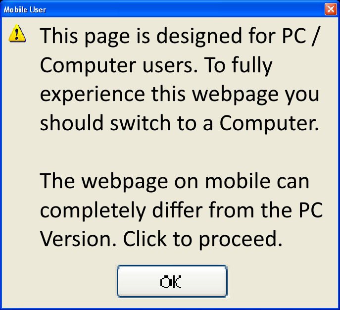

<app-application-page *ngIf="showWindows && !mobileMode['MobileMode']">
    <router-outlet></router-outlet>
</app-application-page>
<div *ngIf="showWindows && mobileMode['MobileMode']"
    style="background-image: url('https://i.imgur.com/yOpoaJH.jpg'); height:100%">
    
    <app-mobile-application-page *ngIf="!mobileMode['MobileUser'] || !mobileModePopup || ignoreDisclaimer">
        <router-outlet></router-outlet>
    </app-mobile-application-page>
</div>

<router-outlet *ngIf="!showWindows"></router-outlet>
<app-toast></app-toast>